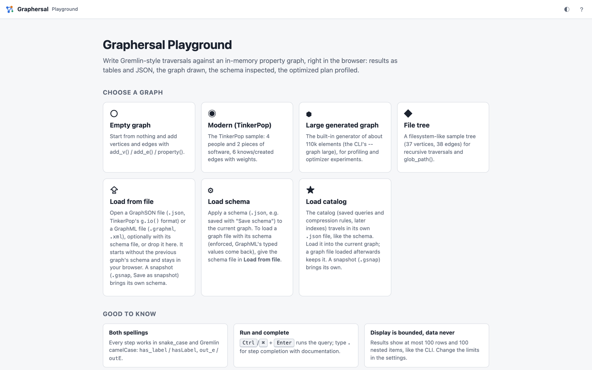
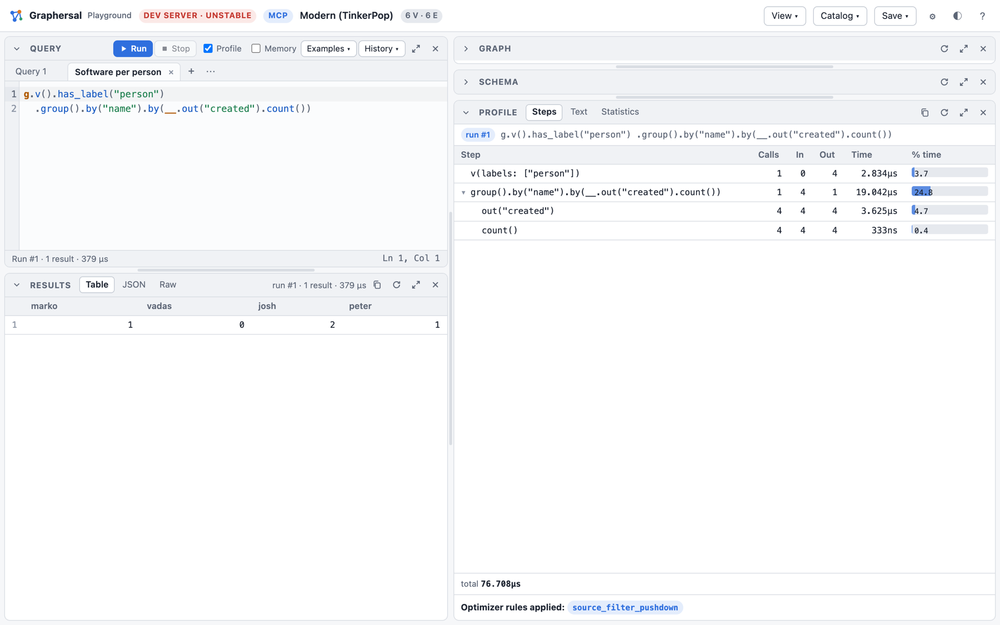
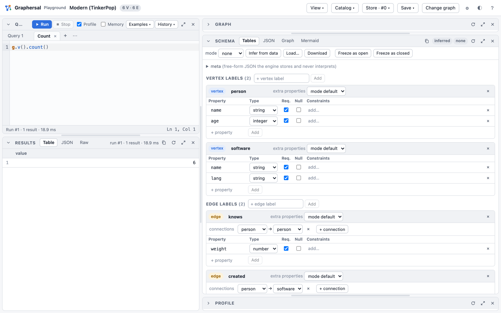
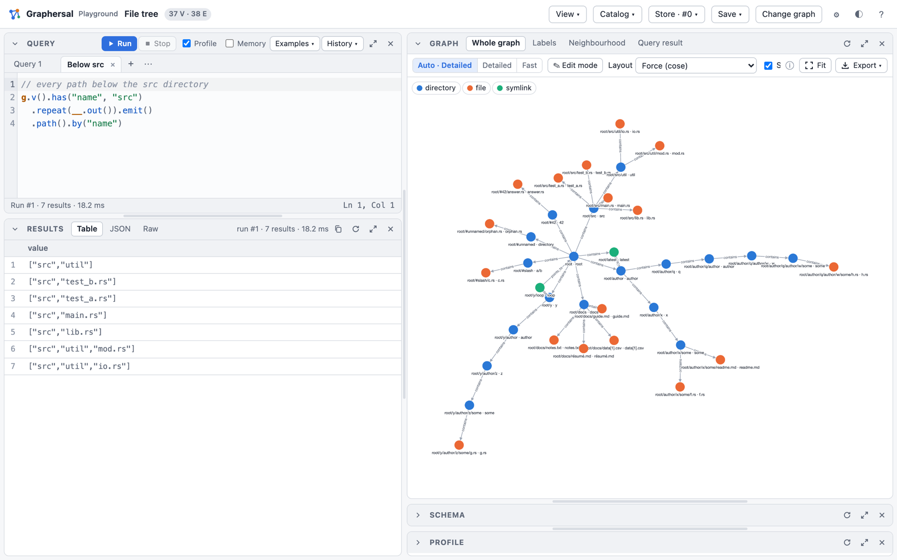

Try It in the Browser
The playground is the quickest way to see what Graphersal does. It is a web page that runs the real engine, compiled to WebAssembly, inside your browser: no server, no account, and your data never leaves the machine.
Start it
rustup target add wasm32-unknown-unknown # one-time
cargo install --locked wasm-bindgen-cli --version 0.2.129 # one-time
playground/build.sh # builds playground/pkg/
python3 playground/serve.py 8000 # open http://localhost:8000/
The start page offers sample graphs, or a GraphSON or GraphML file of your own:

Pick Modern (TinkerPop): four people, two pieces of software, and who knows and created what. Most examples in this book run on it.
Run a query
Type a traversal into the Query panel and press Ctrl/⌘+Enter. The results appear as a table
(also as JSON and as the raw text the command line prints), and the Graph panel draws the graph.
Typing . offers every step with its description and a runnable example.

A few queries to start with; Run in the playground under each one opens it there:
g.v().has_label("person").values("name") // all people
g.v().has("name", "marko").out("knows").values("name") // whom marko knows
g.v().has_label("person").has("age", P.gt(30)).values("name") // people older than 30
g.v().has_label("person").group().by("name").by(__.out("created").count()) // software per person
The Examples menu holds about thirty more, grouped by graph and topic.
See how it ran
With Profile on, every run also shows the plan the optimizer made of your query: each step
with its calls, traversers in and out and its time, plus the optimizer rules that changed the plan.
Here has_label("person") was folded into the start step (v(labels: ["person"])):

Look at the schema
The Schema panel infers the structure of the data: the labels, their properties and types, and which edges connect which labels. You can edit it, and Freeze as open or Freeze as closed turns it into a schema the engine enforces on every write.

Walk a bigger graph
The File tree sample is a small directory tree: good for recursive traversals with repeat().

What else is in there
- several query tabs side by side, a history and saved scripts;
- a graph editor (add, change and delete vertices and edges by clicking);
- a fast WebGL drawing for large graphs, label graphs and neighbourhood views;
- saved queries, compression rules and property indexes in the Catalog menu;
- a Store in memory with commits, marks, point-in-time views, forks and rollback (the Store menu);
- downloads of the graph (GraphSON, GraphML, snapshot), the schema and the catalog.
- vector search over embeddings: the Examples group "Embeddings (vectors)" and Embeddings and Vector Search.
- the green Share link button in the top bar: a link that opens your query together with a small graph, for example in a bug report (Share a query with its graph).
Every feature is described in Web Playground. The same UI also runs against a graph on your disk, served by the command line tool: Dev Server, MCP and AI Chat.